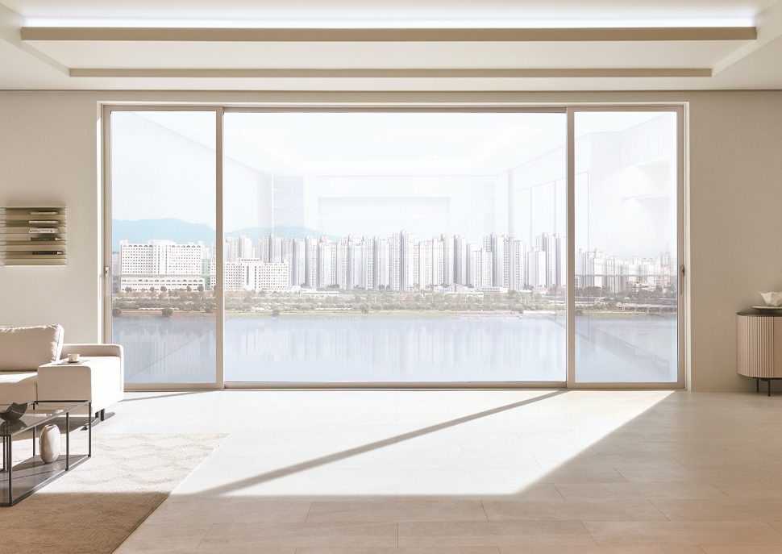
확 트인 뷰
슬림해진 프레임 두께만큼 유리 면이 넓어져, 창밖 풍경이 그대로 들어옵니다.
LX 창호
넓은 유리와 슬림한 프레임으로 시야는 시원하게, 실내는 더 밝게. 설치할 공간에 맞는 제품을 살펴보세요.

슬림해진 프레임 두께만큼 유리 면이 넓어져, 창밖 풍경이 그대로 들어옵니다.
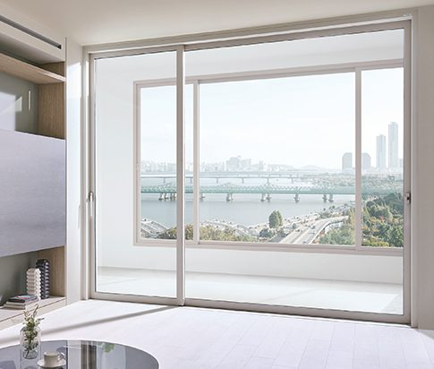
플랫한 창틀 하부 디자인으로 발코니와 실내가 이어지는 듯 넓어 보입니다.
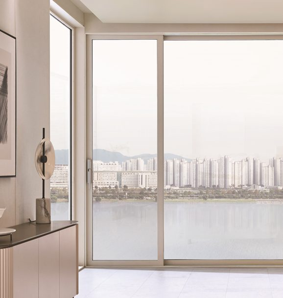
프레임이 드러나지 않는 베젤리스 디자인과 실리콘 없는 깔끔한 유리 마감.
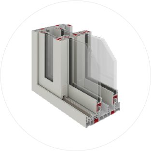
F-140 · F-145 (단창)
F-250 · F-265 · F-285 (이중창)
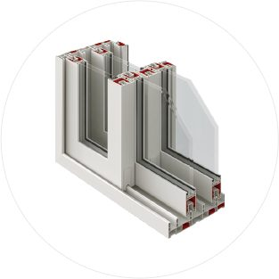
F-130I (단창)
F-250I · F-270I (이중창)
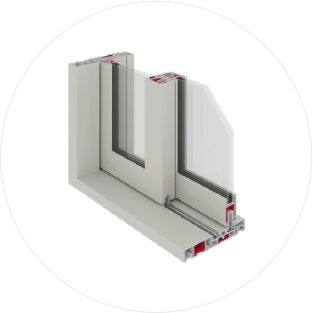
F-230W · F-230WF
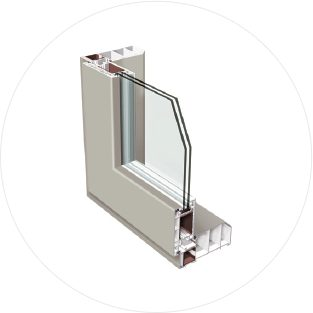
F-TD140 (도어)
F-SH60 · F-TH60 (창)
제품 사진·단면도: LX Z:IN 공식 자료. 색상·유리 사양은 현장에 맞춰 상담 때 안내합니다.
시공 사례
대산이 LX 창호를 공급한 실제 현장입니다. 시공 직후 현장 사진과 현장 정보를 함께 살펴보세요.
ALL IN ONE
대산에서 LX 창호를 구매하시면, 같은 공사에 필요한 목자재·기초자재를 10% 할인해 드립니다.
창호 금액은 할인 대상에서 제외됩니다. 대상 품목과 적용 조건은 상담 시 확인해 주세요.
대상·제외 품목, 기준 가격, 적용 시점, 중복 여부대산 소개
도어와 창호는 같은 현장에서, 같은 시공업자와 함께 움직입니다. 35년 동안 전국의 시공업자에게 도어를 팔며 쌓은 판매·A/S·서비스 노하우를 LX 창호에 그대로 씁니다.
창호는 전담 직원이 처음부터 실측 연결까지 맡아 상담하고, 같은 현장의 목자재·단열재·석고보드도 대산에서 함께 준비할 수 있습니다.
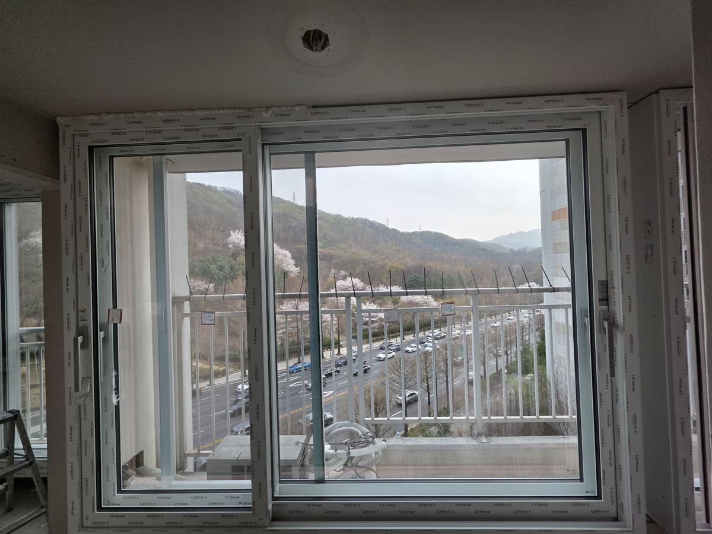
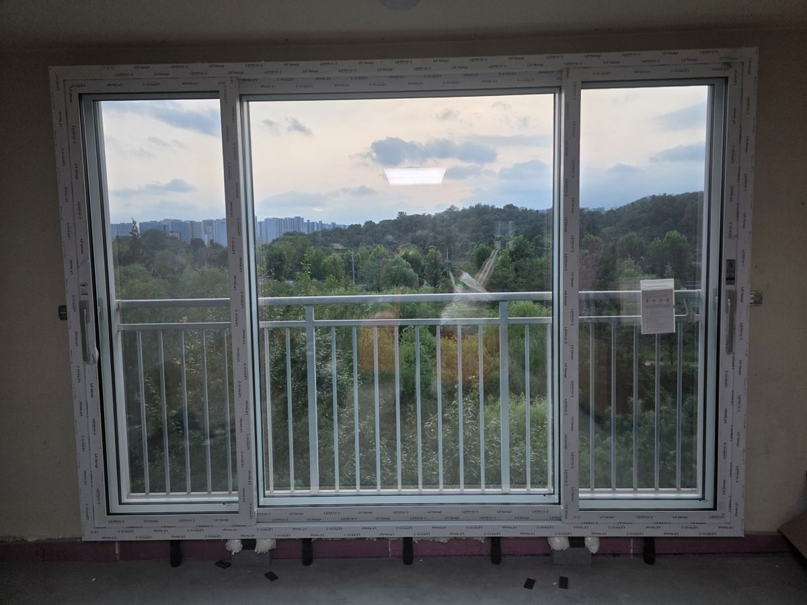
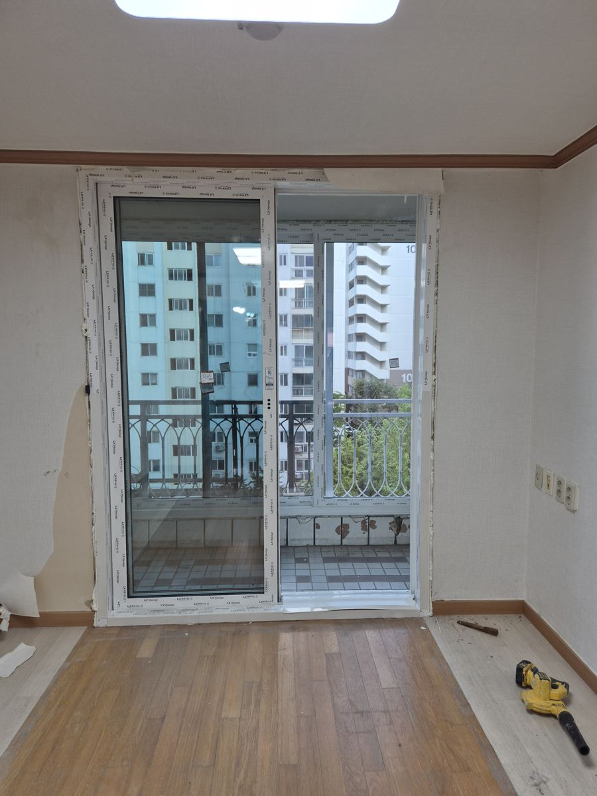
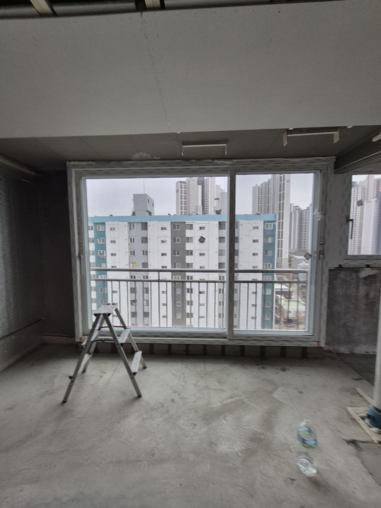
진행 절차
창호 선택부터 실측 준비까지, 필요한 내용을 함께 확인합니다.
상담 신청만으로 실측 일정이나 주문이 확정되지는 않습니다.
자주 묻는 질문
네. 처음에는 현장 상황과 궁금한 내용을 알려주세요. 견적에 필요한 치수와 현장 조건은 이후 실측 과정에서 확인합니다.
네. 인테리어 업체뿐 아니라 창호 구매를 알아보시는 고객도 문의하실 수 있습니다.
창호 전담 직원과 상담한 뒤 실측을 요청하시면, 진행 가능 여부와 일정을 협의합니다. 현장 실측은 협력업체가 진행합니다. 비용·지역·일정 조건
상담과 현장 실측을 거쳐 제품과 현장 조건을 확인한 뒤 견적서를 안내합니다. 전달 방식·소요 기간
창호 금액은 제외됩니다. LX 창호 구매와 함께 같은 공사 건의 목자재·기초자재를 구매하실 때 적용하는 혜택입니다. 대상 품목과 세부 조건은 상담 시 확인해 주세요.
시공·A/S 문의 창구는 담당 범위가 정해지면 질문을 추가합니다.
창호 상담 신청
궁금한 제품이나 현장 상황을 알려주세요. 창호 전담 직원이 상담해 드립니다. 전화와 카카오톡으로 문의하거나 연락처를 남겨주세요.